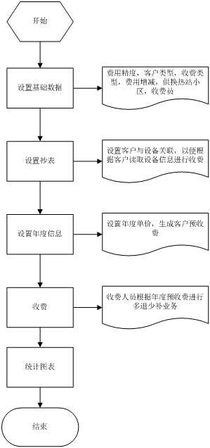
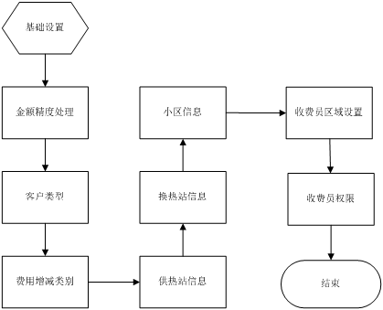
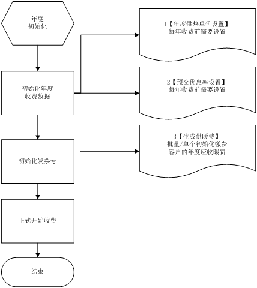

规范供热收款行为，为供热公司收费业务提供指导，本规范使用于供热收费业务系统，当前，供热企业普遍存在的客户资料混乱、用热状态和面积变更、陈欠应收不清、财务对账不准、政策条例灵活多变等现状；在收费管理上普遍处于手动、半自动记账状态；在和客户互动上只有电话、上门贴通知单等低效率、低回报的原始手段；在流程审批、部门协作上还处于打电话或拿单子签字流转的纸张办公方式，管理流程不规范等等。
如此种种管理模式，不经意间严重消耗了供热企业内部能量，影响了客户便利性和满意度，大大加重了供热运营成本和向客户收费的难度。
本系统归纳了北方各省市供热企业的供热收费信息化需求，为供热企业量身打造了整套供热收费管理流程一站式解决方案。

基础配置流程
统精度处理包括四舍五入到角，供热力企业可以根据实际情况选择，初始化客户类型在年度单价设置的时候可以根据客户类型来进行分别收费和管理，根据政策来进行调整费用的增减设置，供热站下面有多个换热站，换热站下有多个小区，大的小区会出多个换热站，所以换热站跟小区是多对多关系，客户很多的时候可以根据区域来进行分配和职责关联。

1、 金额精度处理：包括四舍五入到角，到分，小数点后4位的处理。
2、 客户类型设置：主要是为了给客户分类，并根据客户分类来进行收费标准设定。
3、 费用减免设置：如 领导特批，温度不达标等等来进行对单个客户的费用减免。
4、 附加费用设置：如 材料费等等来进行对单个客户附加费用。
5、 供热站设置：设置好供热公司负责那几个供热站和换热站。
6、 供换热站和小区关系：一个供热站下有多个换热战，一个换热站下有多个小区，大小区有多个换热站。
7、 收费员区域设置：设置每个收费员负责那个区域和有那些权限。
8、 收费员向管理员申请发票号。
抄表配置流程
基础信息和热计量表基础信息进行管理，可以灵活地把表添加到小区、楼、户。在系统中可以清楚地看到哪些厂商的表使用在那些小区、楼、户。每个热计量表信息包括：表类型、表开启状态、计量单位、直径、生产厂商、生产时间、使用时间、累积热量、累积流量、累积工作时间、末次抄表时间等。
年度单价配置流程
收费的特点是必须按供热年度进行管理，无论是收费单价，滞纳金比例，停热基础费都是可能按年度调整的，如今年的面积调整，房屋易主，暖气报停等情况都不能影响其他年度，否则历史客户数据的统计和汇总会一直在变。
各个年度之间的数据需要清晰可查，而且每个年度的收费员，管理人员或许都会调整，因此在每个收费年度开始之前，需要进行年度数据初始化工作，生成年度供暖费，并完成收费员区域分配及发票号分配，方便收费员在收费过程中自动同步打印发票。
在年度收费开始前，系统管理员需要对当前年的暖费政策做一些设置，包括违约金计算日期、违约金比例、停热基础费比例、计量热价、两部制热价生成机制。
热计量收费普遍采用两部制收费模式，需要预先设定热基本费、热预收费。在生成客户年度暖费时，基于热基本费、热预收费、供热面积、热计量单价生成客户年度应交金额。
系统在实施部署时，供热企业需要确定采用何种类型的收费模式，主要分为：面积收费、热计量收费，兼容面积和热计量两种模式的混合收费模式。
系统会自动根据当前的暖费政策和客户的类型生成应收暖费。

柜台收费流程
客户来交费的时候，系统自动提示客户基本资料、年度记录、历史收退费记录、历史采暖变更记录、客户其他日志记录。
在收费界面，系统严格执行预交优惠、费用减免、附加费用等供热企业相关政策，收费员只需要填入“入金”，并根据系统提示进行找钱即可完成此次收费工作。在热计量预收费环节，系统默认打印收据，在供暖结束后进行多退少补结算时，完成收据换发票过程。
收费过程可能出现的情况：
1：断网，断电。
断网的处理：